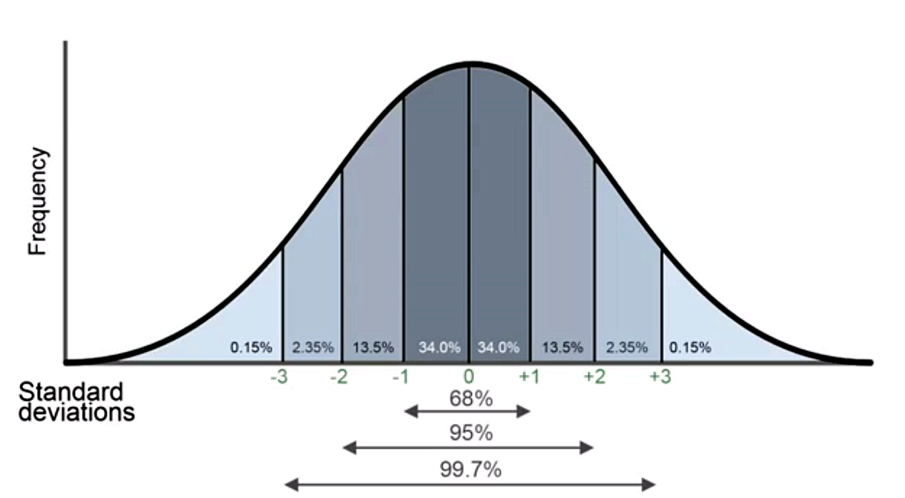

Sitater fra Deque University
Goals
The goal is to use accessibility to drive innovation. There are real challenges to solve in accessibility. Let those challenges drive innovation. Let them be the inspiration that lifts the design to the next level. Don't be satisfied with "good enough" or compliant. Think creatively. Think inclusively. Always design with accessibility in mind.
Accessibility matters a lot to people with disabilities
Compliance does not equate to a great user experience; your creativity and commitment to accessibility will be the deciding factor in how we raise the bar for what customers expect when using our products and services. Inaccessible web sites are not just inconvenient for people with disabilities, they are blocking.
You have the power to make your product better by making it usable by all people and giving everyone equal access to information. Failing to make a web site accessible has real consequences for real people. Inaccessible web sites take away freedoms that people with disabilities would otherwise enjoy, reducing quality of life, and making day-to-day tasks difficult or impossible. Let's do our part to design a more inclusive and more welcoming experience for all our customers.
Avoid Exclusive Design Patterns
Accessibility problems are the result of biased design decisions. Exclusion is the result of design patterns that fail to take into account the full spectrum of people who will use the design. Often these biased design patterns are accidental. Designers don't realize that their design patterns assume certain user characteristics. It is common to assume, for example that everyone can see and can use a mouse. Web designs created for sighted mouse users will cause problems for blind keyboard users.
It would be a big mistake to say, "well, blind keyboard users have trouble with the design because of their disability." The disability is actually not the problem. The design is the problem. The design itself causes a disabling situation that could be avoided with a better design. It is 100% possible to create an accessible design that works for blind keyboard users. It is up to the designer to do so.
Designing for edge cases
If you always design for the "typical" or "statistical normal" user, you're missing the chance to invent solutions that reach even more people. Before we go too far, let's talk about the actual meaning of the word "normal." Normal, when used as a technical term in mathematics, refers to statistical probability. It describes the likelihood that a member of a given population will have characteristics that match the mathematical average of the population as a whole. It is represented visually by a graphical curve, often called a "bell curve".
If you target your design at the users who fall in the middle of the normal curve (in statistical terms, we would say plus or minus one standard deviation from the mean, or average), you would meet the needs of 68% of the users. That's a substantial majority. You might think that's good enough. For the majority of your users it is in fact good enough. But it's not good enough for 32% of your users.
What if you took a different approach, and instead identified two target users: one at two standard deviations left of the mean, and one at two standard deviations right of the mean? If you did that, you would meet the needs of two very different kinds of people, and your design would have to take into account the middle ground between them. You'd end up satisfying the needs of 95% to 99.7% of the users.
Automation
[...] There's a lot more you can do beyond these two things, but you don't need a person with a disability to tell you you're missing
alttext on an image or alabelfor a form element, for example. Automated tools can already do that. Take advantage of the person's time to gain more meaningful feedback.
Usability vs accessibility
If a web site is difficult to use, it's not always obvious to people with disabilities whether the problems are due to accessibility compliance errors or broader usability problems. If they can't figure out how to use your web site, they may assume your site is inaccessible, even if it is technically compliant but just hard to use with a disability. Design a good, usable experience so that people don't have a reason to question the site's accessibility.
Can you create a design that complies fully with the accessibility guidelines, but which is not fully accessible?
The answer is yes, that can happen, though the risk of having a terribly inaccessible web site is quite low if it meets the guidelines. Still, it's worth pointing out that the guidelines don't cover every last aspect of accessibility. In fact, the guidelines were written to be objectively testable, which means that all of the subjective aspects of accessibility were purposely excluded from the guidelines.
The category of disability most neglected in current guidelines is cognitive disabilities, because many of the measurements of cognitive disability access include some degree of subjective judgment.
Many of the subjective criteria spill over into areas that many would consider the realm of usability, rather than pure accessibility, but the truth is there is a lot of overlap between accessibility and usability. What if a website is technically "accessible" (according to the guidelines) but is highly unusable? Could you really say that such a web site is accessible? It might meet a limited definition of accessibility, but it would fail to meet the implied intent of web accessibility, which is that people with disabilities can use the web site.
One size fits most
There are strong arguments for not creating separate designs just for the sake of accessibility:
- Separate designs are rarely necessary. You can build in all of the accessibility you need in a single design for almost all kinds of disabilities (severe cognitive disabilities are the main exception).
- Users may not activate the accessible version even if you create the "perfect" accessible version. It is much easier for a person to simply use the web site than to try to figure out custom accessibility options or how to activate them.
- Stigma. There is a long history of people with disabilities being relegated to "the back door," both in a literal sense and in a metaphorical sense. Users with disabilities would rather use the main version of the website, partly out of the fear that they may be missing something by not going to the main version.
- Maintaining one version of a web design is hard enough. Trying to maintain two versions, or multiple versions for several kinds of disabilities, is probably too much to ask of your web team.
- You can't tell who has a disability. [...] The only option is to provide those features for all users, whether they need them or not. On the flip side, you cannot assume that someone has a disability if they access the accessibility features.
Landmarks
In most cases, you want only one header, one search, one main, and one footer. You can have multiple navigation regions, but it's often best to limit it just to the main navigation. If you do designate multiple navigation regions, give them unique names using aria-label (e.g.
<nav aria-label="Product categories">